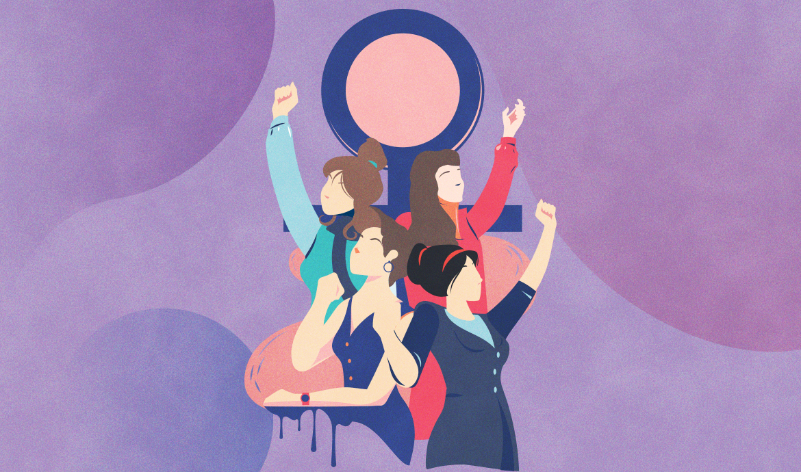

Origen
origen
El Día Internacional de la Mujer tiene sus raíces en el movimiento obrero de mediados del siglo XIX, en un momento de gran expansión y turbulencias en el mundo industrializado, en el que la mujer comenzó a alzar cada vez más su voz.
En el año 1910, cuando un grupo de mujeres de 17 países se reunieron en Dinamarca con dos motivos: fortalecer el avance en la igualdad de género y la defensa de los derechos de las mujeres e impulsar la universalidad del voto femenino. A petición de la política alemana Clara Zetkin se proclamó el 8 de marzo como Día Internacional de la Mujer.

Como consecuencia de la decisión adoptada en Copenhague ese año, el Día Internacional de la Mujer se celebró por primera vez el 19 de marzo de 1911 en Alemania, Austria, Dinamarca y Suiza, con mítines a los que asistieron más de un millón de personas, que exigieron para las mujeres el derecho de voto y el de ocupar cargos públicos, el derecho al trabajo, a la formación profesional y a la no discriminación laboral.